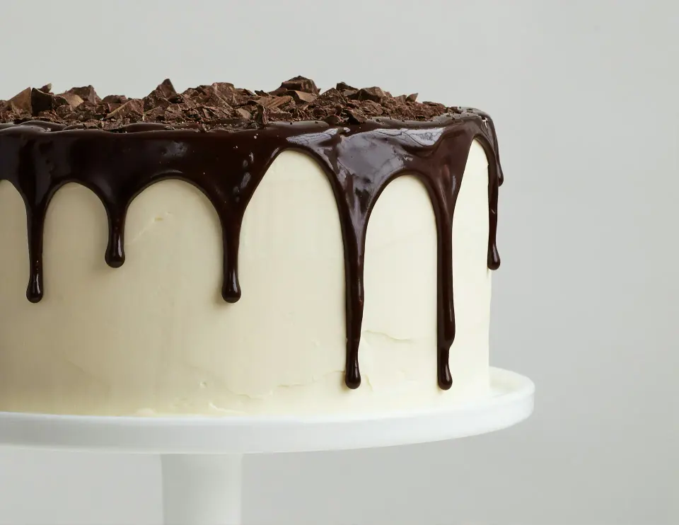
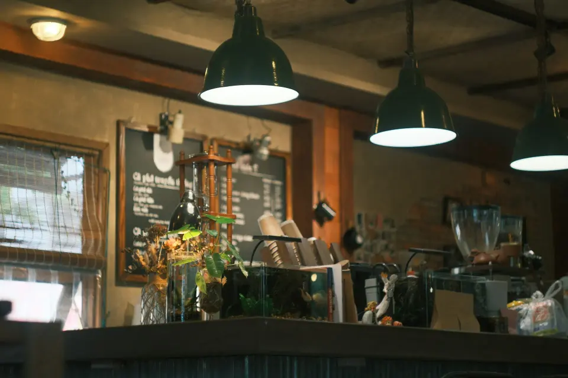
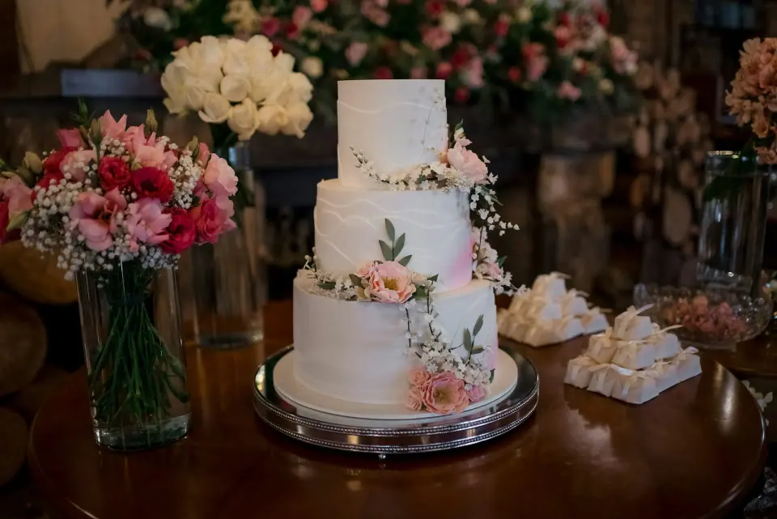
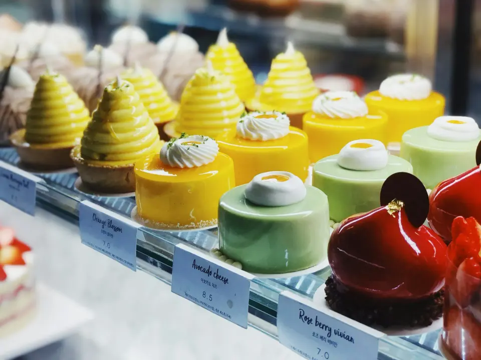
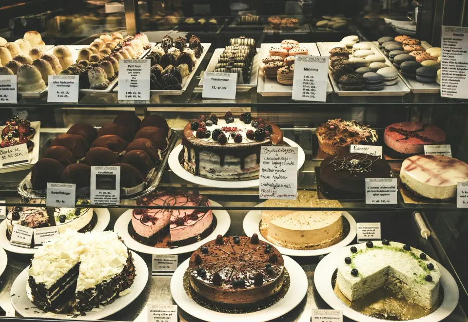
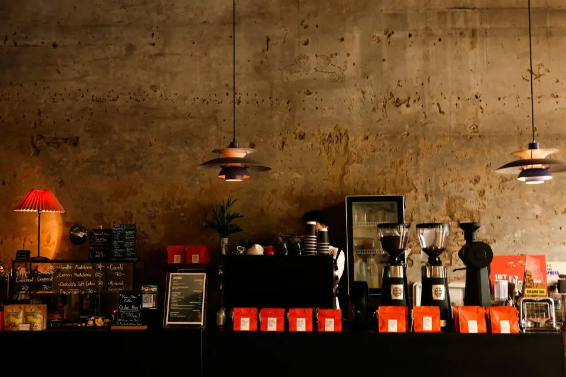
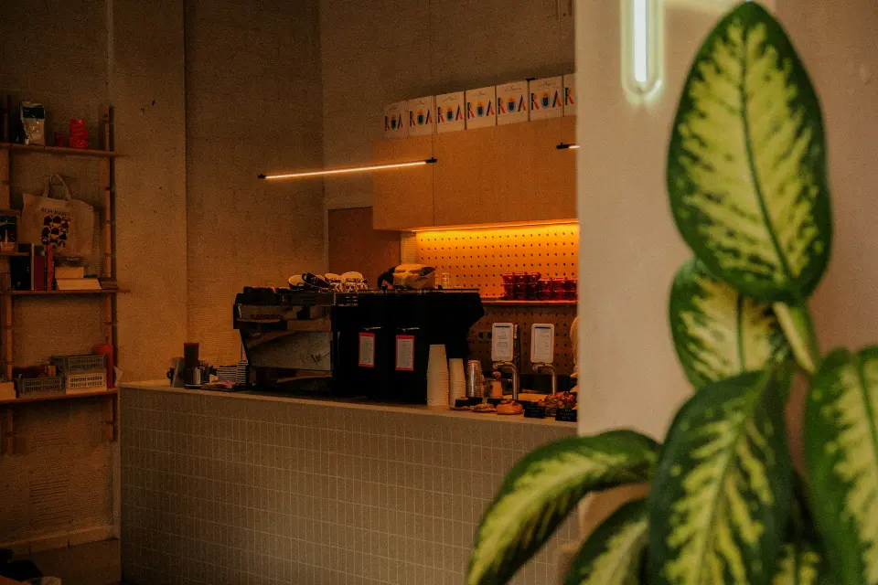

Красноярск · кондитерская и торты на заказ
Глазурь
Кондитерская Глазурь в Красноярске. Торт, который запомнят
Торты на заказ, пирожные и кофе. Заказ торта — за минуту, без звонка: начинка, вес и день праздника.
Открываемся
С девяти утра — свежая выпечка и кофе. Торты делаем каждый день: витрина к обеду обновляется, а заказные уезжают к праздникам по всему городу.
- 4,9в 2ГИС — 248 оценок, 131 отзыв
- 9–21каждый день, без выходных
- 2 дняна торт по вашему эскизу

Здесь будет фото вашего кондитера
Шеф-кондитер
Анна
Анна собирает каждый заказной торт сама: подбирает начинку под повод, рисует эскиз и пишет вам фото перед выдачей. Её фирменное — медовик с облепихой и шоколадная глазурь «капля».
Торт на заказ


День рождения, свадьба, выпускной, корпоратив. Пришлите идею или фото — Анна нарисует эскиз, посчитает вес по числу гостей и пришлёт фото торта перед выдачей.
- Вес и начинка — по числу гостей
- Эскиз и цена — за 15 минут в мессенджере
- Доставка по городу в коробке с хладоэлементом
Праздники
Свадебные, детские, юбилейные — торты, которые уехали к гостям за последний месяц. Новые работы — в приложении и в боте.



Сладко с первого кусочка
4,9 — 248 подтверждённых оценок и 131 отзывов в 2ГИС
Заказала медовик с облепихой на юбилей мамы — гости просили рецепт. Фото торта прислали заранее, очень спокойно.
Свадебный торт точь-в-точь как на эскизе, привезли вовремя, в жару ничего не поплыло.
Заказали бенто через бота в 11 вечера, утром забрали. Удобно и вкусно.
Лучшие эклеры и кофе по пути на работу. Персонал всегда улыбается.
В телефоне гостя
Приложение кондитерской и бот заказов в MAX и Telegram: гость заказывает торт, копит баллы, дарит сертификат — а вы видите все заказы в одном месте.
До завтра
Витрина закрывается в девять вечера, а заказ торта работает круглосуточно — оставьте его прямо сейчас.
- Адрес
- Красноярск, ул. Сладкая, 7 (демо)
2ГИС · Яндекс Карты - Часы
- каждый день с 9:00 до 21:00
- Связь
- +7 391 200-00-07 · Telegram
- Торты на заказ
- от 1 кг, за 2 дня — ярусные за 5 дней
- Доставка
- по городу — в коробке с хладоэлементом
